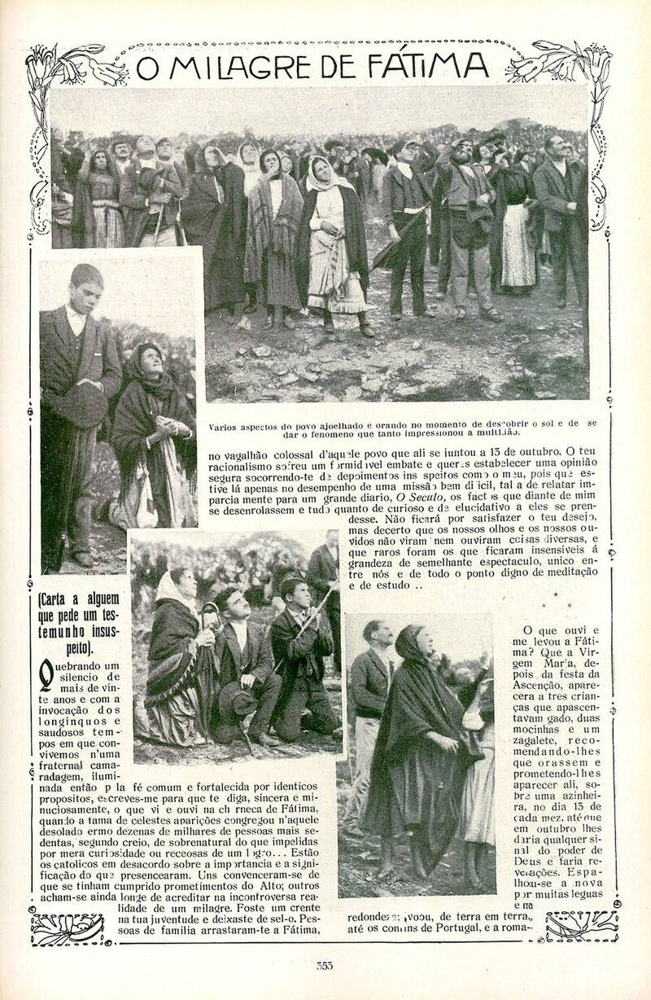

Miracle of the Sun
Fátima, Portugal, 1917

On October 13, 1917, a crowd estimated at 50,000 to 70,000 gathered at the Cova da Iria after three shepherd children said the Virgin Mary had promised a miracle. Many witnesses reported the sun spinning, zigzagging and seeming to plunge toward the earth; others saw only colors, and some saw nothing. The Catholic Church declared the event "worthy of belief" in 1930. Skeptics point to optical effects from staring at the sun through thin cloud. Some UFO researchers argue the apparitions were close encounters (see the claims ledger). 1,2
Open in the interactive Watcher
Related
Sources
- Miracle of the Sun Wikipedia
- The Fátima Trilogy (Joaquim Fernandes and Fina d'Armada) Anomalist Books